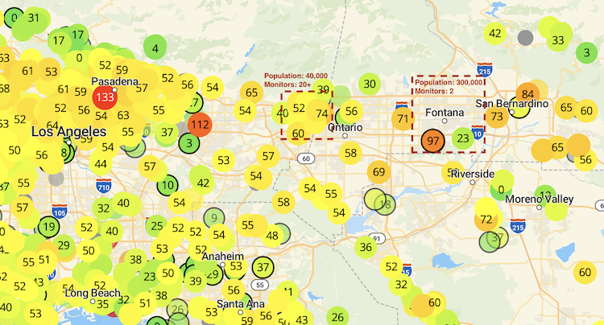
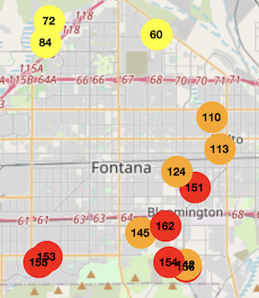
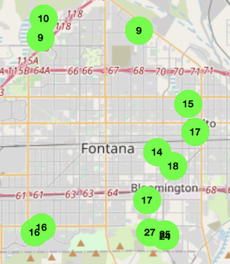

KVCR News: Inland Empire has the worst ozone pollution in the country.
Introduction
Southern California consistently experiences the worst air quality in the country. In San Bernardino and Riverside counties, known as the Inland Empire, heavy warehousing and constant truck traffic worsen air pollution in residential areas. However, government and community air quality monitoring is lacking in this region. There is limited data of the unhealthy air that millions of people east of Los Angeles breathe daily.
In a partnership with the Robert Redford Conservancy at Pitzer College, the Center for Community Action and Environmental Justice, and IQAir, we installed 58 particulate air quality monitors in homes across Bloomington, Fontana, and Rialto. Most residences have an indoor and an outdoor monitor. After over a year of data collection, this dashboard provides interactive tools to visualize and analyze the collected data.
Dashboard Guide
- Map shows all of the data from the community air monitors on a map. Air quality data is available starting in February 2025.
- Writeup contains a more in-depth description of the problems of warehouse expansion, air quality, data accessibility, and public health.
- Interactive Data contains a few extra charts to see the data in other ways and make a number of comparisons.
Resources and Documentation
- Air Quality Monitoring Platforms
- IQAir: https://www.iqair.com
- PurpleAir: https://www2.purpleair.com/
- OpenAQ: https://openaq.org/
- GitHub
- Partners
- Robert Redford Conservancy: https://www.pitzer.edu/offices/redfordconservancy
- Center for Community Action and Environmental Justice: https://www.ccaej.org/
- IQAir: https://www.iqair.com/us/support/contact-us
- Contact
- Robert Redford Conservancy: rrc@pitzer.edu
- Center for Community Action and Environmental Justice: admin@ccaej.org
Data Accessibility
The Inland Empire is among the most polluted areas in the country due to decades of extensive warehousing and trucking through the region. However, it is severely underrepresented within many air monitoring networks, masking the severity of air quality issues and making progress towards solutions more difficult.
PurpleAir, a popular hub for community-sourced air monitoring, displays this lack of information. Cities in Southern California with higher average incomes, larger white populations, and less industrial development and air pollution have far more air monitors per capita. The cities of Fontana, Bloomington, and Rialto, with a total population of about 350,000, only have 2 air monitors.

This initiative helps to improve access to important air quality data in cities affected by warehouse and trucking expansion. We can see patterns and spikes that occur throughout the year, and see how bad air quality in the Inland Empire can get. The data below is from these air monitors and is helping to fill the gap in data in this area.

11/03/25: During a heat wave, air quality is bad enough that it's unsafe to go outside.

11/17/25: After it rains, the air is much cleaner.
Health Impacts
While air pollution is known to make residents’ everyday quality of life worse, there are also many potential long-term health concerns in both children and adults who live, work, and attend school in places with poor air quality.
Medical research finds that the risk of many lung conditions is proportionally higher as the amount of particulate matter in the air increases. Many medical papers define a "hazard ratio" which typically states that the likelihood of a patient developing a condition increases by a certain percentage for each additional 5 µg/m³ of PM2.5 (Raaschou-Nielsen et al., 2013, Turner et al., 2011, Katanoda et al., 2011, Tecer et al., 2007). In 2025, the Inland Empire had about 7.5 µg/m³ more PM2.5 than the rest of the United States on average. The increased health risks are summarized below.
People living in low-income areas are at even higher risks to develop lung diseases due to reduced access to medical care and sufficient air filters and HVAC technology for their homes.
CCAEJ community surveying revealed that air quality negatively impacts a very large proportion of community members. Out of 74 Inland Empire residents surveyed, 77% said their quality of life had been negatively impacted by poor air quality in their area in numerous ways, including lung problems, being unable to go outside, having trouble exercising, and children missing school. 62% reported that they or a family member had experienced new or exacerbated medical concerns such as asthma, allergies, eczema, or irritation of the eyes. Community members have expressed concern for the capability of institutions to respond to public health crises following mismanagement of the Covid-19 pandemic.
Further Implications
Warehouse development has coincided with significant degradation of infrastructure in recent years. Power is often allocated toward industrial development rather than residential areas. Blackouts are increasingly common, and many community members report that they can last for days. Outages frequently occur due to heavy construction loads or poor weather, and in the summer, power may be cut off without warning to reduce usage. One resident mentioned that their "air filter broke because of power surges," and that they can't afford a new one. Poor ventilation in many homes in Bloomington and elsewhere make it difficult for people to reduce unclean air in their homes, and there is often a cost barrier to installing high-quality HVAC systems.
KVCR News: Extreme winds trigger thousands of power shutoffs for So Cal Edison customers.
Solutions
Strong evidence for region-wide poor air quality throughout the year demonstrates that warehouse development and truck routes are actively harmful to public health and quality of life in the Inland Empire.
There are many potential avenues for solutions through municipal and regional government. Community organizing through the Freight Coalition realigned truck routes in Riverside County to avoid residential areas and sensitive receptors such as schools.
Future solutions may involve bolstering public health initiatives to alleviate stress during poor air quality events, improving reliability and redundancy of electricity systems to avoid blackouts in residential areas, and improving the ventilation and filtration systems in homes.
References
- Vincent, K. (2019, April 24). Report: Inland Empire Has The Worst Air Pollution In The Nation... Even Worse Than LA. KVCR News. https://www.kvcrnews.org/local-environment/2019-04-24/report-inland-empire-has-the-worst-air-pollution-in-the-nation-even-worse-than-la
- Stone, E. (2025, January 9). Extreme winds trigger thousands of power shutoffs for So Cal Edison customers. KVCR News. https://www.kvcrnews.org/local-news/2025-01-08/extreme-winds-trigger-thousands-of-power-shutoffs-for-so-cal-edison-customers
- Katanoda, K., Sobue, T., Satoh, H., Tajima, K., Suzuki, T., Nakatsuka, H., Takezaki, T., Nakayama, T., Nitta, H., Tanabe, K., & Tominaga, S. (2011). An association between long-term exposure to ambient air pollution and mortality from lung cancer and respiratory diseases in Japan. Journal of Epidemiology, 21(2), 132–143. https://doi.org/10.2188/jea.je20100098
- Raaschou-Nielsen, O., Andersen, Z. J., Beelen, R., Samoli, E., Stafoggia, M., Weinmayr, G., Hoffmann, B., Fischer, P., Nieuwenhuijsen, M. J., Brunekreef, B., Xun, W. W., Katsouyanni, K., Dimakopoulou, K., Sommar, J., Forsberg, B., Modig, L., Oudin, A., Oftedal, B., Schwarze, P. E., … Hoek, G. (2013). Air pollution and lung cancer incidence in 17 European cohorts: Prospective analyses from the European Study of Cohorts for Air Pollution Effects (ESCAPE). The Lancet. Oncology, 14(9), 813–822. https://doi.org/10.1016/S1470-2045(13)70279-1
- Tecer, L. H., Alagha, O., Karaca, F., Tuncel, G., & Eldes, N. (2008). Particulate Matter (PM 2.5 , PM 10-2.5 , and PM 10 ) and Children’s Hospital Admissions for Asthma and Respiratory Diseases: A Bidirectional Case-Crossover Study. Journal of Toxicology and Environmental Health. Part A, 71, 512–520. https://doi.org/10.1080/15287390801907459
- Turner, M. C., Krewski, D., Pope, C. A., Chen, Y., Gapstur, S. M., & Thun, M. J. (2011). Long-term ambient fine particulate matter air pollution and lung cancer in a large cohort of never-smokers. American Journal of Respiratory and Critical Care Medicine, 184(12), 1374–1381. https://doi.org/10.1164/rccm.201106-1011OC
| Term | Explanation |
|---|---|
| AQI | "Air Quality Index". A measure of pollutants in the air, including particulates, ozone, nitrogen oxides, and more. AQI of 50 or higher is considered unhealthy for long-term exposure by most organizations. |
| PM2.5 | Particulate matter less than 2.5 microns. Usually emitted from vehicles and factories. PM2.5 of 9 µg/m³ or higher is considered unhealthy for long-term exposure by most organizations. |
| PM10 | Larger particles. Usually dust or soot particles from fires. |
| µg/m³ | Micrograms per cubic meter. Used as a measure for PM concentration in the air. |